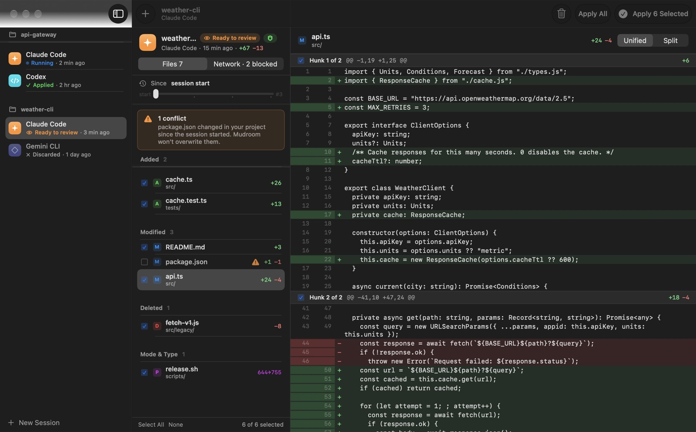
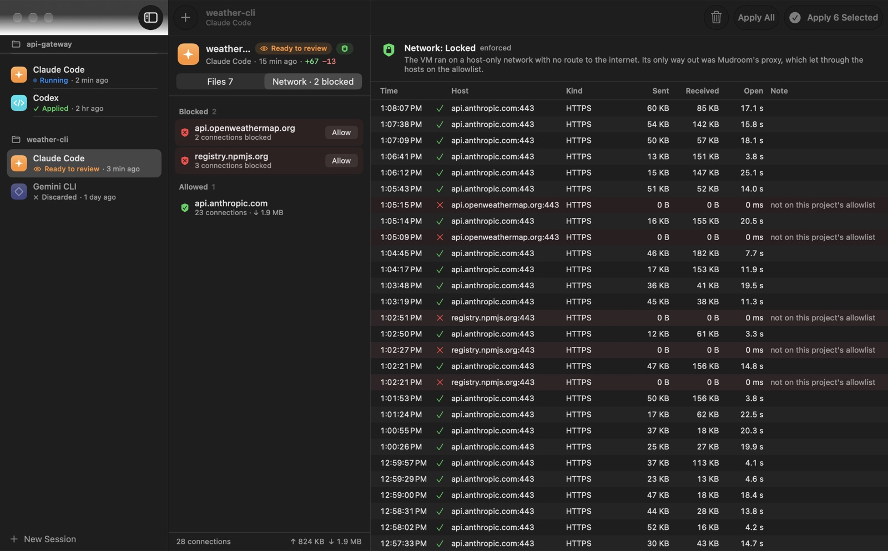
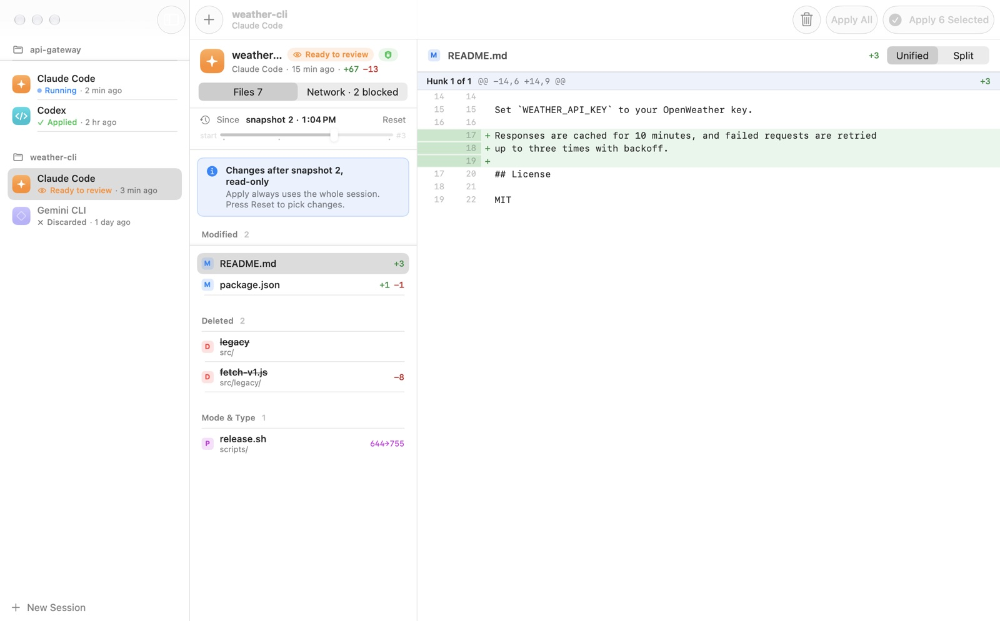

Mudroom runs Claude Code, Codex, Gemini CLI, opencode, Aider or any command in a Linux micro-VM, on a copy-on-write clone of your project, with network access limited to the hosts you allow. When the agent is done, you read the diff and apply all of it, some files, some hunks or none, and you can undo any apply later.
brew install --cask kernel-hunter/tap/mudroommacOS app and CLI on Apple silicon with macOS 26. A CLI for Linux, Windows and Intel Macs with Docker or Podman. Free, MIT licensed.

Agents do their best work with permission prompts turned off. Mudroom keeps that from reaching your real files and network.
An APFS copy-on-write clone of the project, untracked and ignored files included. It costs no disk until files change. Your real folder is never mounted.
A Linux micro-VM per session with Apple's container runtime, with only the clone inside.
No DNS and no route out. The only exit is a proxy on your Mac that allows the agent's API hosts plus the ones you add, and logs every connection. A firewall inside the VM blocks every other port on your Mac, and the agent can't turn it off.
Read the diff like a pull request. Apply everything, some files or single hunks. Any apply can be undone.
Each connection the VM makes is logged with its host and port, whether it was allowed, the bytes and the duration. Snapshots taken while the agent ran let you review from any point.


Claude Code, Codex, Gemini CLI, opencode and Aider are set up for you, or run any command. Local models through Ollama or LM Studio work too.
Use your Claude account through claude setup-token, the Codex and Gemini logins you already have, or API keys. Tokens are kept in the Keychain and reach the VM by name, never on a command line.
If a file changed in your project since the session started, Mudroom flags the conflict and won't overwrite it.
Locked, open or offline. Settings live outside the project, so the agent can't change them. Turn on npm, PyPI and GitHub with one command.
A native SwiftUI app for starting and reviewing sessions, and a mudroom command that does the same from a terminal or a script.
MIT licensed, no account, no telemetry. The README explains how it works and what it doesn't stop.
The app runs the same commands.
mudroom run ~/code/myapp -- claude --dangerously-skip-permissions mudroom diff last # review mudroom network log last # what the VM connected to, and what was blocked mudroom apply last src/parser.swift --hunks 1,3 # apply only some hunks mudroom undo last # changed your mind
Mudroom is an early project. It is ad-hoc signed, not notarized: the Homebrew cask and the install script remove the quarantine flag, and if you download the zip in a browser, use System Settings, Privacy & Security, Open Anyway. On Windows, install the CLI with Scoop or the release zip; see the install notes.
Checked against each project's docs on 30 September 2026. Corrections welcome.
| Where the agent works | When its writes reach your folder | Review before they land | |
|---|---|---|---|
| Mudroom | Linux micro-VM, on an APFS clone; your folder is never mounted | When you apply | Diff app, per file and per hunk, with undo |
| Docker Sandboxes | microVM; your folder mounted read-write by default, or a private git clone with --clone | Right away by default; with --clone, when you fetch | Through git, in clone mode |
| Claude Code sandboxing | Your real folder, with OS-level limits (no VM) | Right away | Per-edit prompts, unless you skip permissions |